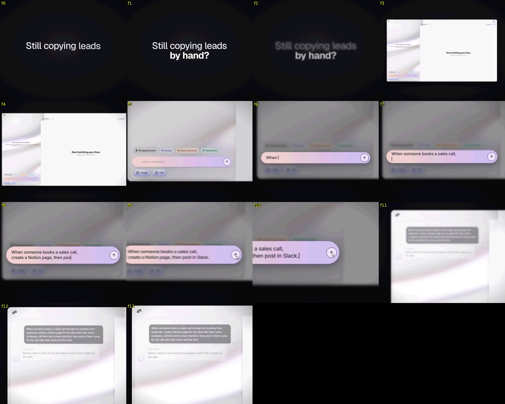
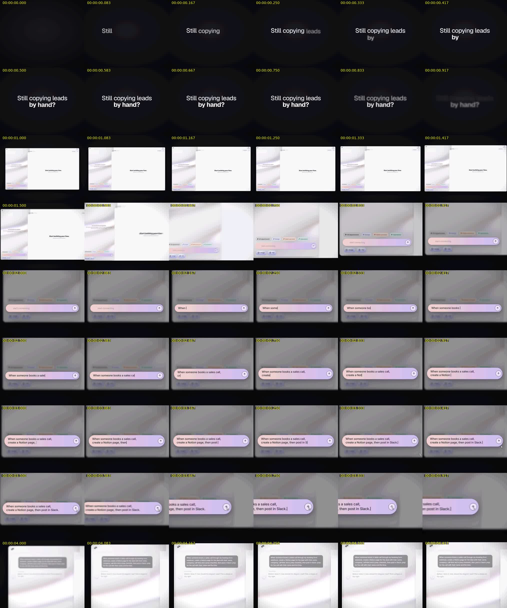

Threshold: -26.0 LUFS
Loudness range:
LRA: 1.8 LU
Threshold: -37.3 LUFS
LRA low: -18.1 LUFS
LRA high: -16.3 LUFS
True peak:
Peak: -0.9 dBFS
[out#0/null @ 0x6350f5128b40] video:55KiB audio:828KiB subtitle:0KiB other streams:0KiB global headers:0KiB muxing overhead: unknown
frame= 135 fps=0.0 q=-0.0 Lsize=N/A time=00:00:04.50 bitrate=N/A speed=21.2x elapsed=0:00:00.21